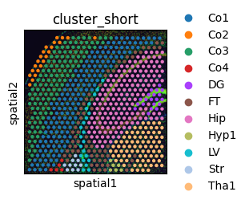
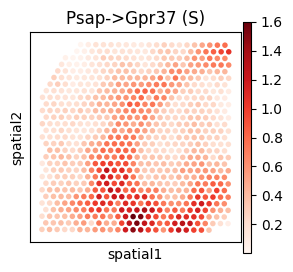

AdultMouseBrain (Visium) Analysis Tutorial
Data availability: All processed spatial transcriptomics datasets are publicly available on Zenodo: https://doi.org/10.5281/zenodo.17522268
[1]:
from models.SCILD_main import *
from models.help_func import create_LRDatabase_D, compute_spatial_autocorrelation
import scanpy as sc
import squidpy as sq
import warnings
warnings.filterwarnings('ignore')
np.random.seed(42)
Import data
[2]:
adata = sc.read_h5ad('./data/AdultMouseBrainVisium_adata_processed.h5ad')
adata
[2]:
AnnData object with n_obs × n_vars = 704 × 16562
obs: 'in_tissue', 'array_row', 'array_col', 'cluster', 'cluster_short'
var: 'gene_ids', 'feature_types', 'genome'
uns: 'spatial'
obsm: 'spatial'
[3]:
plt.rcParams['figure.figsize'] = [4, 4]
sq.pl.spatial_scatter(adata, color="cluster")
plt.rcParams['figure.figsize'] = [3, 3]
sq.pl.spatial_scatter(adata, color="cluster_short")


Create L-R database
[4]:
LRDatabase_D = create_LRDatabase_D(
adata,
min_cell_pct=0.01,
database='CellChat',
species='mouse'
)
[5]:
LRDatabase_D.shape
[5]:
(122, 137)
Run SCILD
[6]:
CCCProb = SCILD(adata=adata,
LRDatabase_D=LRDatabase_D,
platform='Visium',
alpha_q=0.1,
alpha_f=0.1,
alpha_g=0.1,
niter_max=100,
eps=1e-4,
verbose=True,
plot_error=True
)
CCCProb.preparing()
nl = CCCProb.nl
nr = CCCProb.nr
ns = CCCProb.ns
print('The number of ligand is: ' + str(nl))
print('The number of receptor is: ' + str(nr))
print('The number of spot is: ' + str(ns))
*************Preparing*************
neighbor_k: 5
The number of ligand is: 122
The number of receptor is: 137
The number of spot is: 704
[7]:
CCCProb.rho
[7]:
<704x704 sparse matrix of type '<class 'numpy.float64'>'
with 50488 stored elements in Compressed Sparse Column format>
[8]:
mu0 = np.random.random(nl * ns).reshape(-1, 1)
v0 = np.random.random(nr * ns).reshape(-1, 1)
CCCProb.solving_optimization(mu0, v0)
*************Solving*************
The relative error is: 0.05422960670178906
The relative error is: 0.030468500874004583
The relative error is: 0.021880602206506762
The relative error is: 0.01731146339011294
The relative error is: 0.014419522322642295
The relative error is: 0.012401846672791652
The relative error is: 0.010903638560294707
The relative error is: 0.009743389624678108
The relative error is: 0.008814750361473847
The relative error is: 0.008053111810448113
The final relative error is: 0.008053111810448113
The total iteration step is: 100

[9]:
CCCProb.adata
[9]:
AnnData object with n_obs × n_vars = 704 × 16562
obs: 'in_tissue', 'array_row', 'array_col', 'cluster', 'cluster_short'
var: 'gene_ids', 'feature_types', 'genome'
uns: 'spatial', 'cluster_colors', 'cluster_short_colors'
obsm: 'spatial', 'sum-sender-Q', 'sum-sender-P', 'sum-receiver'
Extract LR CCC
[10]:
CCCProb.query_all_LR()
[11]:
CCCProb.tensor_P.shape
[11]:
(704, 704, 122, 137)
[12]:
res_dict = tensor_to_method_result(CCCProb.tensor_P,
list(CCCProb.LRDatabase_D.index),
list(CCCProb.LRDatabase_D.columns))
len(res_dict)
[12]:
16714
[13]:
res_dict = filter_method_result_by_LR_database(res_dict, CCCProb.LRDatabase_D)
len(res_dict)
[13]:
428
[14]:
import pickle
with open("./results/AdultMouseBrainVisium_SCILD_result.pkl", "wb") as f:
pickle.dump(res_dict, f)
Visualization
select L-Rs to show (spatial)
[15]:
CCC_df = CCCProb.compute_TSSR()
CCC_adata = sc.AnnData(CCC_df)
CCC_adata.obsm['spatial'] = adata.obsm['spatial']
CCC_adata
[15]:
AnnData object with n_obs × n_vars = 704 × 856
obsm: 'spatial'
[16]:
LR_df_spatial = compute_spatial_autocorrelation(CCC_adata)
LR_df_spatial.sort_values('moran_I', ascending=False).head()
[16]:
| moran_I | p_value | |
|---|---|---|
| Cck->Cckbr (S) | 0.877275 | 0.0 |
| Psap->Gpr37 (S) | 0.841875 | 0.0 |
| Ptn->Itgav (S) | 0.712248 | 0.0 |
| Mif->Cd44 (S) | 0.706839 | 0.0 |
| Mif->Cxcr4 (S) | 0.689518 | 0.0 |
[17]:
CCCProb.adata.obs[CCC_df.columns] = CCC_df
CCCProb.adata.obs.head()
[17]:
| in_tissue | array_row | array_col | cluster | cluster_short | Adcyap1->Adcyap1r1 (S) | Adcyap1->Adcyap1r1 (R) | Adm->Calcrl (S) | Adm->Calcrl (R) | Agt->Mas1 (S) | ... | Wnt9b->Fzd7 (S) | Wnt9b->Fzd7 (R) | Wnt9b->Fzd8 (S) | Wnt9b->Fzd8 (R) | Wnt9b->Fzd9 (S) | Wnt9b->Fzd9 (R) | Wnt9b->Lrp5 (S) | Wnt9b->Lrp5 (R) | Wnt9b->Lrp6 (S) | Wnt9b->Lrp6 (R) | |
|---|---|---|---|---|---|---|---|---|---|---|---|---|---|---|---|---|---|---|---|---|---|
| AAACGAGACGGTTGAT-1 | 1 | 35 | 79 | Thalamus_1 | Tha1 | 5.540112e-25 | 2.064175e-04 | 1.583854e-27 | 8.622791e-09 | 2.679391e-06 | ... | 8.899493e-66 | 3.190313e-09 | 8.834862e-62 | 5.907202e-02 | 4.325451e-62 | 3.190874e-09 | 6.295481e-62 | 3.204622e-09 | 3.169952e-61 | 3.204115e-09 |
| AAAGGGATGTAGCAAG-1 | 1 | 24 | 62 | Hippocampus | Hip | 6.446847e-25 | 6.922303e-02 | 2.315937e-25 | 3.055901e-31 | 4.009939e-01 | ... | 4.254431e-67 | 2.757011e-68 | 1.634193e-62 | 2.757770e-68 | 1.013530e-65 | 2.757909e-68 | 1.399131e-62 | 2.800604e-68 | 1.120718e-61 | 4.792246e-61 |
| AAATGGCATGTCTTGT-1 | 1 | 13 | 69 | Cortex_1 | Co1 | 4.965400e-01 | 2.374571e-01 | 9.841262e-29 | 6.293913e-21 | 7.046112e-25 | ... | 4.173262e-63 | 1.017972e-57 | 3.452837e-62 | 6.522474e-07 | 1.743735e-62 | 1.019193e-57 | 2.148135e-62 | 1.381805e-57 | 1.921847e-61 | 1.383760e-57 |
| AAATGGTCAATGTGCC-1 | 1 | 33 | 51 | Lateral_ventricle | LV | 4.823122e-25 | 1.412368e-12 | 4.223113e-25 | 3.569048e-18 | 7.957267e-25 | ... | 1.447664e-65 | 1.866884e-09 | 2.986872e-61 | 5.203030e-08 | 4.484656e-67 | 1.867874e-09 | 3.167502e-68 | 1.881602e-09 | 2.187537e-61 | 1.882645e-09 |
| AAATTAACGGGTAGCT-1 | 1 | 34 | 58 | Hippocampus | Hip | 6.432587e-25 | 1.494747e-01 | 1.975384e-27 | 5.925023e-18 | 6.182468e-01 | ... | 1.231745e-61 | 2.497865e-09 | 1.299591e-64 | 2.497729e-09 | 8.833940e-67 | 2.498159e-09 | 3.285396e-68 | 2.531911e-09 | 1.790119e-61 | 2.531722e-09 |
5 rows × 861 columns
[18]:
plt.rcParams['figure.figsize'] = [3, 3]
sc.pl.spatial(CCCProb.adata, spot_size=200, color="Psap->Gpr37 (S)", cmap='Reds', img_key=None)

[19]:
plt.rcParams['figure.figsize'] = [3, 3]
sc.pl.spatial(CCCProb.adata, spot_size=200, color=["Psap", "Gpr37"], cmap='Reds', img_key=None)

Cell-group level results
[20]:
from models.help_func import aggregate_to_group
cell_to_group = adata.obs['cluster'].to_dict()
group_result = {}
for lr_key, matrix in res_dict.items():
group_matrix = aggregate_to_group(matrix, cell_to_group)
group_result[lr_key] = group_matrix.values
[ ]: